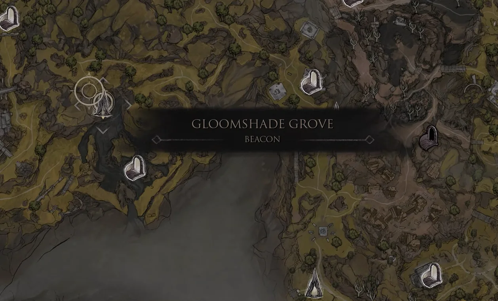
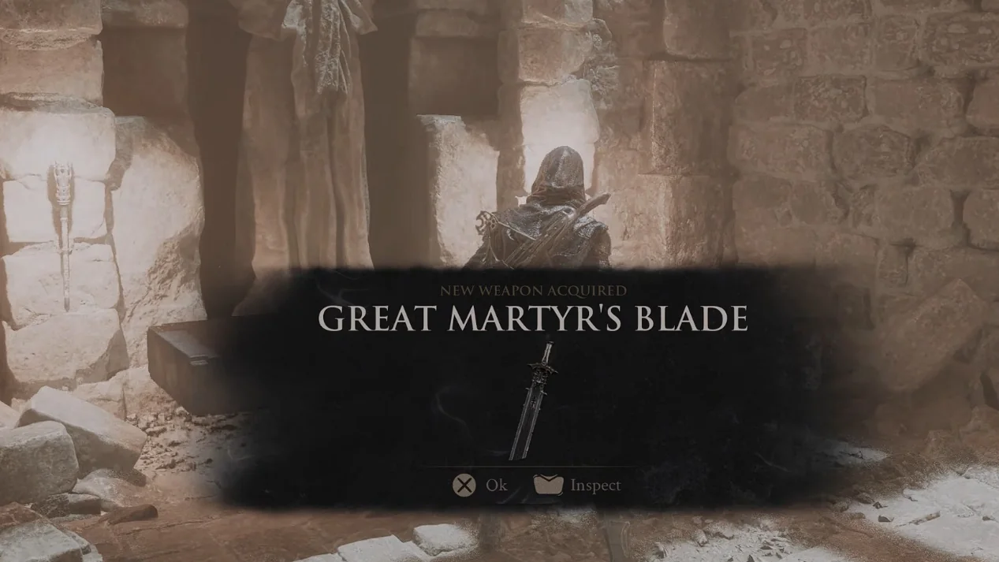

Early-game weapon recommendation
Best early weapon:
Great Martyr's Blade
Our early-game pick is Great Martyr's Blade, provided you can reach Gloomshade Grove Beacon and clear Martyr's Prison. This is a practical route recommendation, not a universal tier-list claim.
- Our pick
- Great Martyr's Blade
- Starting point
- Gloomshade Grove Beacon
- Verified base damage
- 38
Why it is our early-game pick
Great Martyr's Blade combines a verified base damage value of 38 with a full light-and-heavy attack kit and the same Lv.20 Tarforge upgrade ceiling as the other primary weapons. More importantly for a fresh run, its acquisition is a fixed, repeatable route: reach Gloomshade Grove Beacon, clear Martyr's Prison and collect the weapon in the final chamber.
The route is longer than an automatic unlock, but it does not depend on a random drop. Once the area is available, every checkpoint can be followed from the original route boards.


When should you keep The Iconoclast?
If you have not reached Gloomshade Grove or do not want to clear Martyr's Prison yet, keep using The Iconoclast. It unlocks automatically after the Prologue, has a verified base damage value of 35 and can also be upgraded to Lv.20. Your preferred attack speed and moveset still matter more than a three-point base-damage difference.